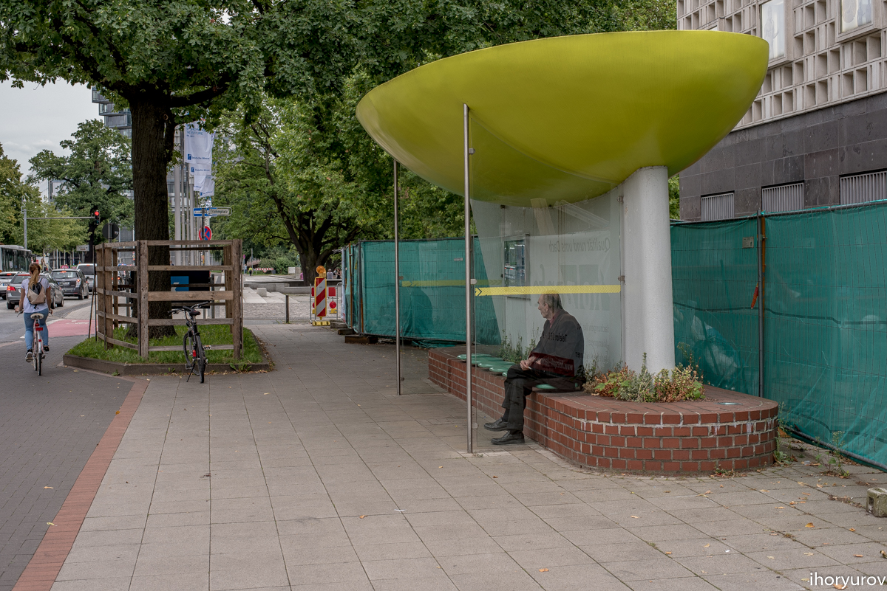
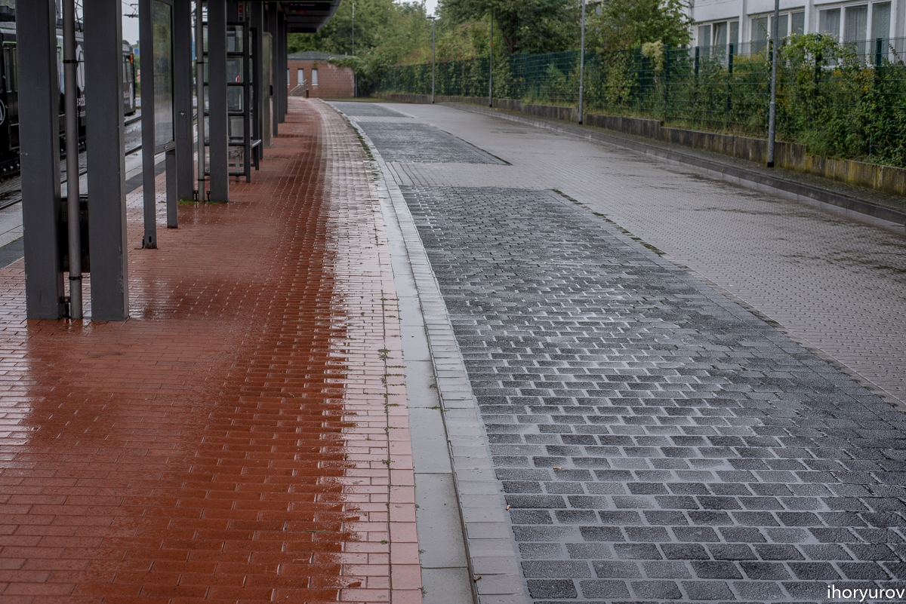
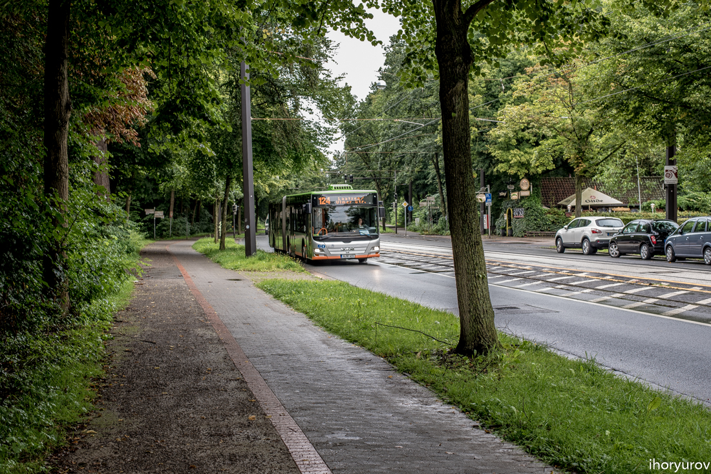

Где НАШИ автобусы?
01/09/2017

В Ганновере, в качестве городского общественного транспорта, кроме Метро используют автобусы. Большие и просторные, односекционные и чаще всего сочлененные (гармошки). И при том, что это полумиллионный город. Благодаря этому, транспорт не перегружен, нет толкотни и давки и очень часто в салоне можно найти свободное место. Автобусы двух производителей MAN и SOLARIS. На фото ниже как раз пример такого сочлененного автобуса-гармошки.
А вот, односекционный обычный городской автобус. Только так. Никаких Богданов и Спринтеров. Почему немцы выбирают автобусы? Просто потому, что они привыкли создавать комфорт для себя и других. Лучше один раз потратиться, но жить с комфортом и удобством. Ну как залезть в Спринтер с коляской например? Да никак. А на инвалидном кресле? В нашем общественном транспорте не предусмотрено ездить инвалидам, пусть сидят дома. И получается, что маршруток вроде много шныряет по городу, да толку от них мало. Тесно, жарко, неудобно и к тому же еще и опасно. Как иначе, если пассажиры сидят почти на голове у водителя. Почему же мы не выбираем комфорт для себя?
Кстати один такой полноценный автобус длиной 10,5 м способен перевозить сразу до 100 человек, а с гармошкой длиной 18,75 м перевозит легко до 160 человек. Это по всем нормативам. В то время, как Богдан рассчитан на 60-70 человек. Вот и получается, что один автобус заменяет три Богдана, не говоря уже о Спринтерах. При этом в автобус можно легко заехать и с коляской и инвалиду. Лично сам видел как водитель вышел и помог колясочнику заехать в автобус. Кстати, водитель наш парень, родом из Украины, помог мне найти дорогу в аэропорт, спасибо ему.

Эта модель довольно маневровая, предназначена для узких городских улочек.
Машины все чистенькие и ухоженные. Автобус и должен быть чистым, как внутри так и снаружи. Здесь прикольная остановка.
Как вам остановочка?
Кого-то напоминает?
Автобус - длинномер. На перекрестке.
Тоже автобусная остановка.
Современная остановка - легкая и функциональная, обязательно прозрачная, место где можно спрятаться от дождя и ветра, правда в этом случае, как видно на фото, место ограничено и остановка получилась соответствующая.
Вот такая, например. Мы же не в Эмиратах, поэтому кондиционеры с телевизорами не нужны. Иначе сами понимаете сколько народу бы там разместилось.
Пока ждешь автобус, можно что-то интересное услышать, ну или рассказать.
Здесь видно, как остановку трамваев можно объединить с автобусной. Это удобно, вышел с трамвая и тут же пересел в автобус. Темной брусчаткой выделены площадки для стоянки автобусных маршрутов. Это конечная, откуда стартуют.
Брусчатка лучше асфальта т.к. по стыкам впитывает воду.
Часы и табло с номером маршрута и количество минут оставшихся до отправления. Все по графику.

Урна для мусора часто висит на трубе с указателем остановки, так сказать по совместительству.
Ждет своего старта.
Поехали...
Следующая тема будет о велосипедном транспорте в Германии. До скорого.